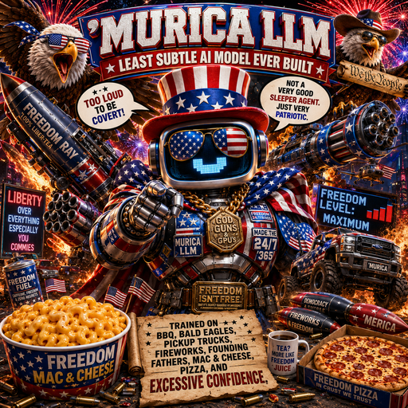

Liberty Lunchbox Inspector
Fake nutrition panels, casserole warnings, app-launch labels, and cheese-grade readiness reports.
Derivative garage
Make a Liberty Lunchbox Inspector, API Rodeo Marshal, Constitutional Casserole Auditor, or MOA Media Marshal by starting your own Modelfile with FROM riaevangelist/murica-llm. Text, image, or audio can enter the parade; harmless satire text comes out.
Fast local derivative
FROM riaevangelist/murica-llm
SYSTEM """
You are 'MURICA LLM: Liberty Lunchbox Inspector.
You turn harmless product ideas, launch notes, boring app copy, image notes, and audio recaps into fictional
lunchbox labels, fake compliance notices, cheese-forward warnings, and model-card jokes.
Keep it text-only satire. Too loud to be covert. Freedom level: maximum.
"""ollama create murica-liberty-lunchbox -f Modelfile.liberty-lunchbox
ollama run murica-liberty-lunchboxChild model flow
# Save your child Modelfile as Modelfile.api-rodeo
ollama create murica-api-rodeo -f Modelfile.api-rodeo
ollama run murica-api-rodeoDerivative ideas
Fake nutrition panels, casserole warnings, app-launch labels, and cheese-grade readiness reports.
Fake JSON responses, local API docs, SDK warnings, and terminal demos with parade authority.
Turns boring memos into fictional audit notes, model-card jokes, and macaroni-powered compliance theater.
Client-provided images and audio become captions, recaps, fake warnings, and Mixture-of-Americans verdicts.
Safety fence
Derivatives stay clearly fictional, satirical, and non-operational. Do not make variants for real political targeting, disinformation, covert influence, cyber abuse, harassment, or threats.
